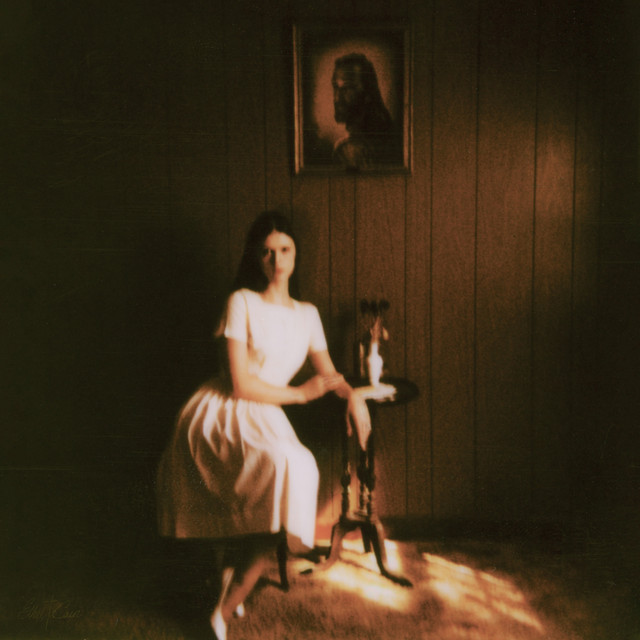
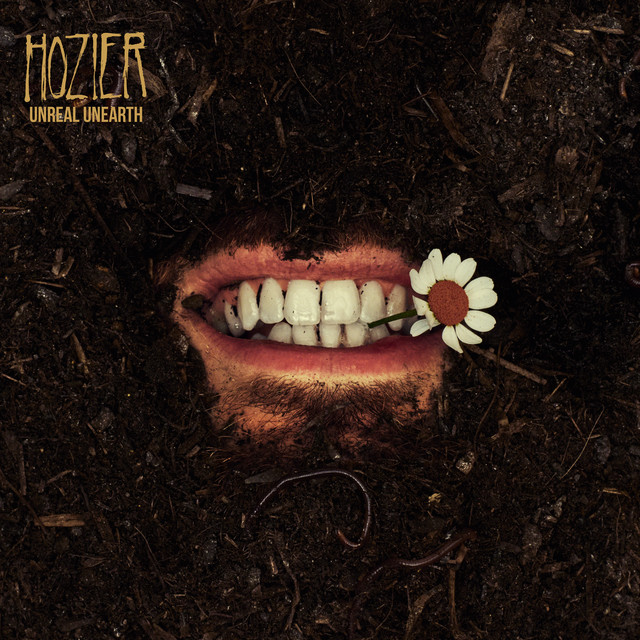
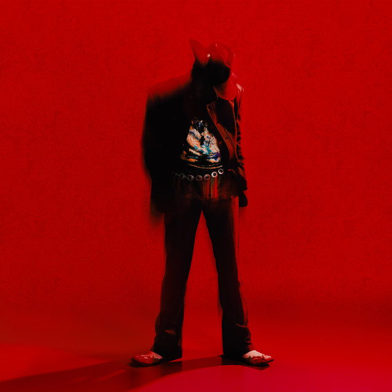
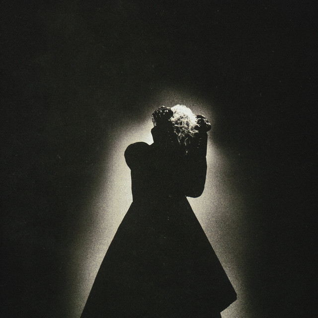
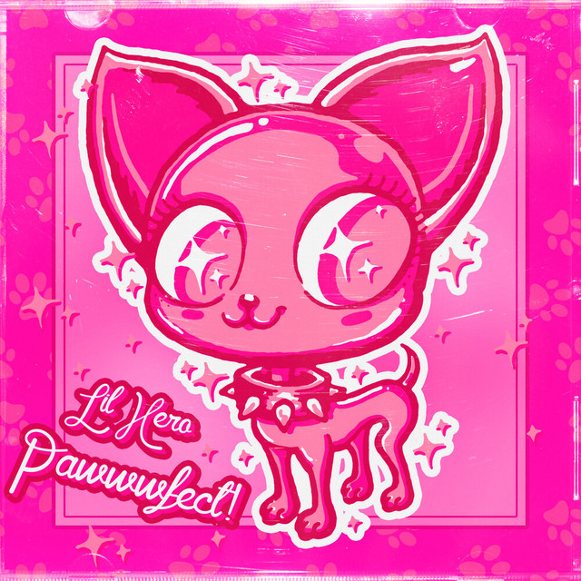
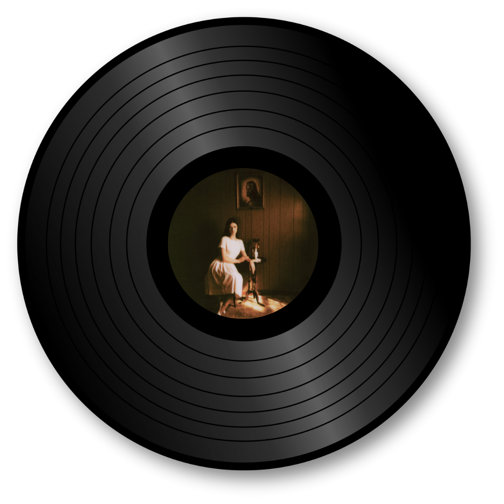
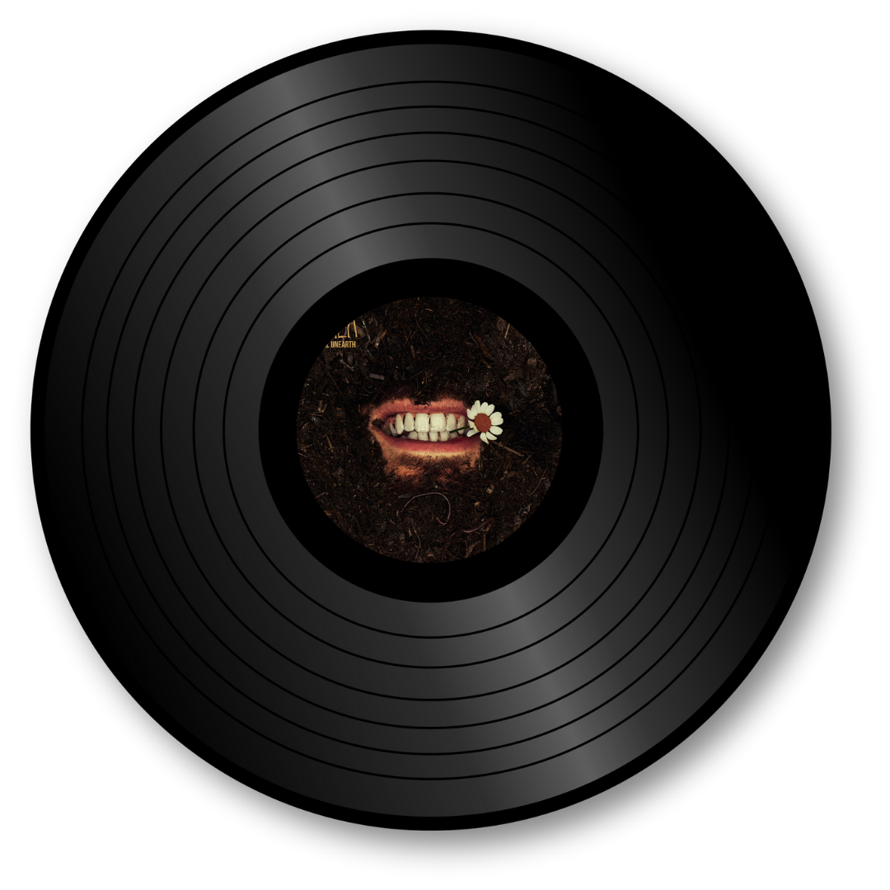
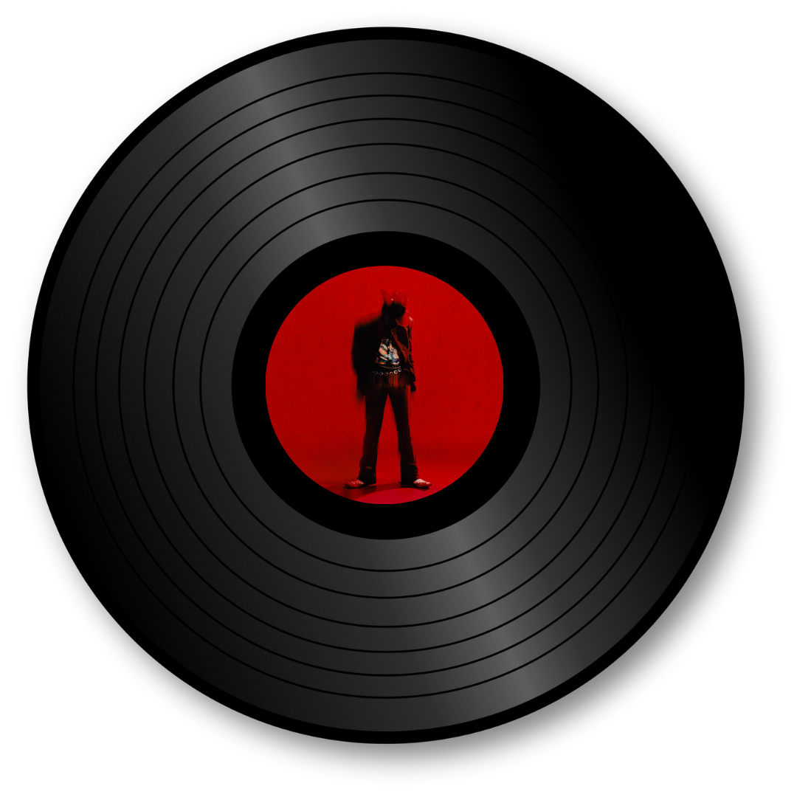
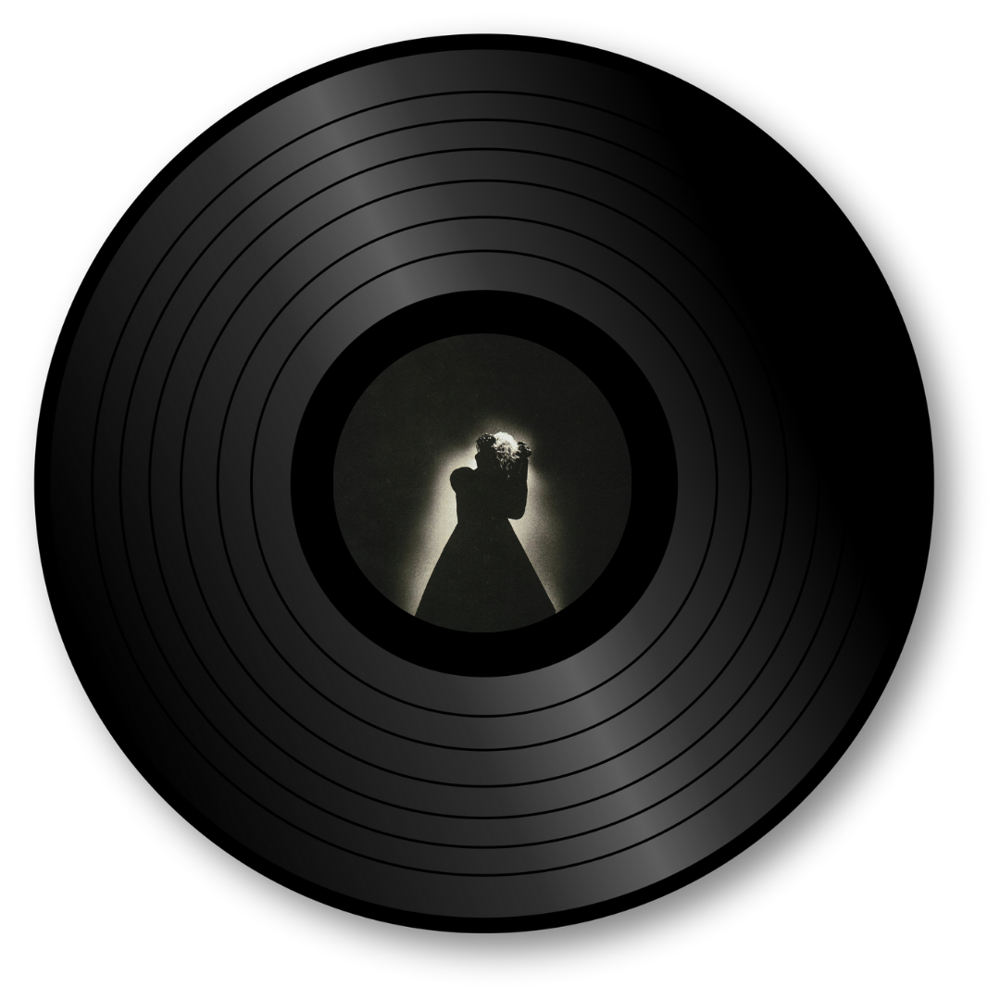
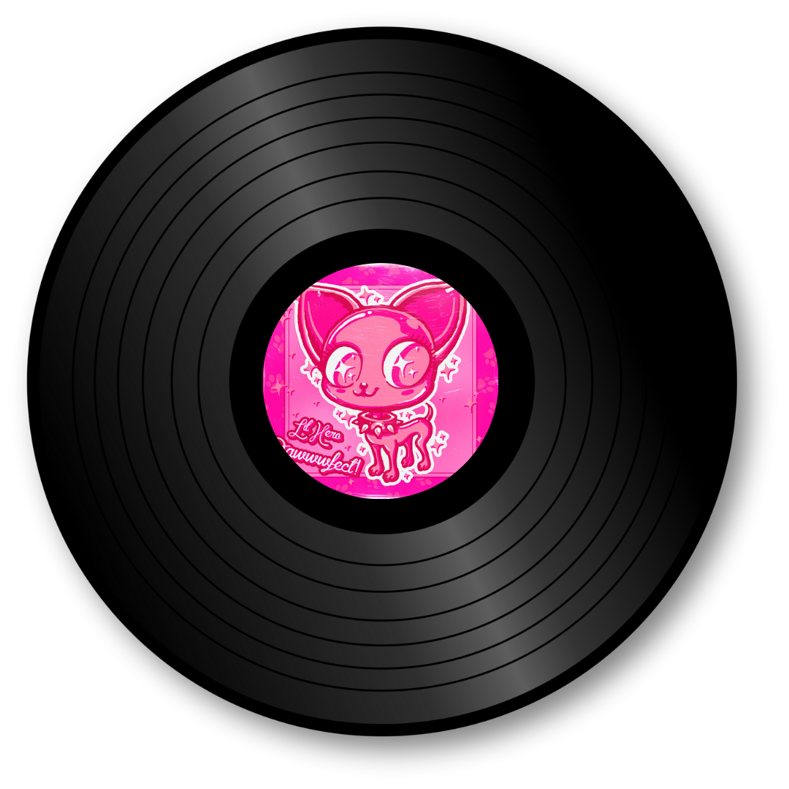

My music taste is a mellow blend of Pop, R&B, and the vibrant sounds of K-Pop. I love how each genre tells a different story, and I'm always on the lookout for new tunes, no matter the style. You'll often find me listening to the haunting narratives of Ethel Cain, the soulful depth of Hozier, the dynamic energy of Seventeen, the moody artistry of DPR Ian, or the dreamy melodies of Keshi. Ultimately, it's all about finding that perfect track that resonates, and I'm always open to exploring new musical landscapes. Here's some of my favorite albums and tracks:









